My blog
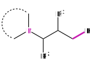
C–H arylation using amines
I outline the results of the research done by the Gaunt Group where a tertiary alkylamine is utilised for C–H functionalisation.
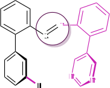
C–H olefination using a TDG
I present a summary of a novel transient directing group pioneered by the Maiti Group which enables distal C–H olefination.
How to get your free £400 energy payment from the UK government
29th July 2022
The UK government has promised £400 to all households in the UK to help with rising fuel bills. But how does it work?
How much will I get paid per month?
Each household’s energy discount will be applied to their fuel bill over six months. Exactly how much per month can be easily visualised with this chart:
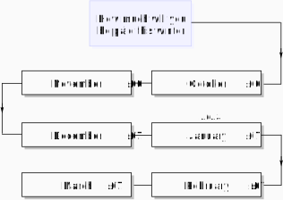
How do I get the discount?
How you receive the money will depend on the way you pay your fuel bills. The chart below will help clear things up:
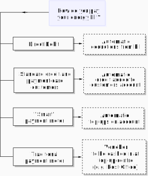
What If I have a ‘non-smart’ prepayment meter?
You will not get the discount payments automatically and instead will receive a energy bill voucher in the first week of the month. It can then be redeemed at your usual top-up point.
The voucher will be provided by SMS text, e-mail or in the post. So, make sure you look out for post from your energy supplier – don’t dispose of unopened letters as they may contain your energy vouchers inside!
Protect yourself against fraud
When using this energy bill scheme, not one household will be asked for their bank details.
So if someone tells you to share your bank details with them in order to receive the energy voucher, then this is likely a scam. Instead, get in touch with your local council who should be able to assist you with redeeming the £400 discount securely.
The recent hike in prices and tips on how to minimise their impact
27th July 2022
Companies across the globe are increasing their prices as high inflation bites.
Below is a graph showing the percentage increases of some recent price changes:
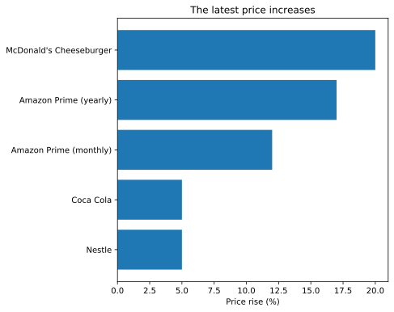
Let’s go through each of these price rises and share some tips to help minimise their impact on your finances.
Nestle
Nestle have increased their prices by more than 5%. This food giant is known for making KitKat, Nesquik, Cheerios and Smarties. Brace yourself for more price hikes - the boss of Nestle has warned that more price rises will happen.
To get around this, try minimising buying well-known branded food items and focus more on non-branded generic food items. Don’t be loyal to a brand name in these challenging times.
In fact, there are many alternatives that taste just as good but also don’t cost as much. Some of the most cost-effective non-branded food items can be found in discounted supermarkets such as Aldi or Lidl.
McDonald's
The price of a McDonald’s cheeseburger is increasing by 20%, from 99p to £1.19. Other items from their menu will also become more expensive.
Why not take this increase as a sign to cut out more takeaway food? Not only will future-you have lower takeaway costs, but future-you will be healthier too!
Create your own tasty cheeseburgers at home for the whole family or cook a big batch and freeze leftover patties. You can source healthier and less-processed ingredients from the supermarket and local butchers.
There are plenty of delicious recipes out there, so why not improve your culinary skills while you’re at it - a worthwhile investment!
Amazon Prime
Online giant Amazon will be hiking its subscription prices on the 15th of September. Monthly subscriptions will go up by 12% for monthly payments to £8.99. Annual membership will be increasing by 17% to £95.
If you’re currently paying monthly and are set on keeping it, switch over to the annual plan now. If you can afford to pay it all in one sum now, you can get next year at £79.
Another way to save is by taking advantage of the service called Amazon Household. This works by letting customers share their Amazon Prime benefit with another adult member in their household and so cuts down subscription costs.
If you’re a student, you should make use of the six-month free trial of Prime Student. This includes free delivery and unlimited streaming of to TV shows and movies via Prime Video.
Coca-Cola
Drinks giant Coca-Cola is increasing its global prices. This will mean an increase costs of about 5% to consumers like you and me.
While Coca-Cola and drinks such as Sprite and Fanta do taste nice for some, try and cut down on consuming it. Instead save these beverages for more special occasions. Your teeth (and your bank balance) will be happy for it!
If you have a sweet tooth, buy cheaper non-brand alternatives. The taste will not be so different. In fact, the taste might be even sweeter as the price of these alternatives are much kinder to your wallet.
To summarise, don’t be loyal to well-marketed food brands that you may have grown used to. Instead experiment with non-brand alternatives that taste just as well but cost less.
The savings you make will add up and help water down the eye-watering price hikes.
Pitfalls of paying by cashless methods when trying to reduce spending
4th June 2022
Paying with cash
Many consider that purchasing items using cash helps to control spending. One reason to explain this is that there is more time to reconsider the purchase and whether you want to hand over your hard-earned cash.
Another reason is that paying by cash provokes the feeling of financial loss seeing money disappear from your wallet as you buy something. This feeling can help stop impulse purchases if paying by cash only.
Paying by a non-contactless card also helps to some extent as you still have to physically hand over your bank card and manually enter your PIN before a transaction is processed.
Is contactless too convenient?
However, while it is convenient to pay by contactless card or by the tap of your phone, this method can take away accountability. This is because there is no physical money leaving your wallet and leaves behind a diminished sense of financial loss when paying via a simple tap of the card.
With the coronavirus pandemic restricting the physical exchange of cash, this has led to a significant increase in contactless payments. Instead of relying on cash to stem spending and impulse purchases, a different approach is needed.
Actively monitoring spending
Being actively involved in monitoring spending by manually categorizing transactions can be an effective technique to managing your finances.
This also avoids using third-party tracker apps which require direct access to your personal bank accounts to analyse your transactions.
Why building your own budget tracker can be worth it
27th April 2022
Sticking to spending targets is hard. But being more actively involved in monitoring your transactions can help get you back on track. One established way to do this is by creating your own budget tracker.
Increased accountability
Tracking outgoing expenses by a tool that one has created themselves can give an increased sense of accountability to keep on top of spending. Moreover, you are likely to continue using a tracker that you had put time and effort into building.
Personally, this built-it-yourself approach works best for me to control my spending compared to using an off-the-shelf third-party app. The main reason why is due to the feeling of fulfilment by consistently using it with my own transaction data and observing first-hand the progress of improving my spending habits.
The automatic sync function of third-party apps can take away the sense of participation of adding your own transactions to a budget tracker and creating your own personalised visualisations.
Actively involved
Instead, a self-built approach can give you an increased level of commitment towards managing your spending compared to third-party apps.
Why shopping at different supermarkets can help you reduce grocery spending
19th April 2022
Shopping at several supermarkets for different food items can be a cost-effective approach to cutting grocery costs.
I was able to directly experience this using my own financial tracker. With this, it was easy to create the following visualisation of my grocery spending:
.svg)
Tracking spending habits
Visualising my grocery spending in this format makes it clear how my shopping habits have changed over the twelve months. It is evident that by shopping more at Waitrose (green bar) instead of buying groceries from both Morrisons (blue bar) and Sarin (purple bar) that my overall spending is gradually increasing to over £140.
From this graph, it is obvious how I should alter my grocery habits to bring down my supermarket expenses. By switching shopping at Waitrose with Morrisons instead this should help lower my overall grocery costs to that seen previously, where it was consistently around the £100 mark.
The reason I switched to shopping at Waitrose in mid-2020 was most likely due to convenience and a shorter walk getting there. While switching back to Morrison might mean travelling a bit more, this will help reduce my grocery spending considerably – worth the slightly longer walking distance!
The risk of impulse purchases
Another approach to reduce grocery spending further is to visit supermarkets less frequently. This is because once at the grocery store, it is very easy to impulse-buy items that you likely were not intending to purchase but was persuaded to buy due to enticing offers.
For example, walking in with intention of buy some milk but walking out of the supermarket not only with a gallon of milk but also a tub of discounted ice cream and some 2-for-1 cereal bars. These additional costs for impulse purchases can add up to a significant amount over time.
How much should you be spending on clothing?
10th April 2022
Many financial experts recommend spending around 5% of your monthly salary on clothing. For example, if you take home £2500 after taxes, spend around £125 a month on clothes (calculated by multiplying 2500 by 0.05).
If you are in the dark about your clothes spending habits and want to get a useful insight into the clothing categories you spend the most on, it is best to try and visualise this.
With a graph like the one below, it is straightforward to see the monthly clothing spend, a breakdown on where clothing is being purchased as well as any spending changes over the months.
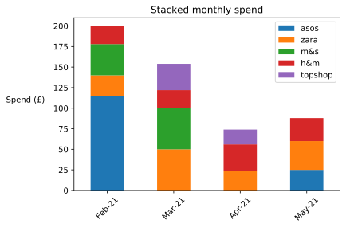
Zara and H&M are the most frequently places that clothes are purchased from in all the four months of data. Something to consider when next in either of these stores.
Losing track of spending over time
It is easy to lose track on how much we are spending on clothes over time. The relatively small purchases can build up to a substantial cost without you even realising. To help keep us informed about the total spend for each of these shops so far, the following bar chart can help:
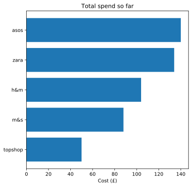
Such a graph reveals that there is are two shops with a considerably larger spend than the others - ASOS and Zara. This might not be so obvious from glancing at your bank transactions on paper.
When looking to buy new clothes next time, having your own personalised graphs in the back of your mind can help you refrain from purchasing more clothes.
The following bar chart illustrates an example spend on various clothing sub-categories:
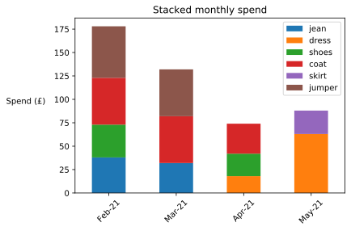
In this chart, we see a lot more is spent during the winter months where jumpers (brown bar) and coats (red bar) are contributing most to the monthly clothing spend. Seeing first-hand how much we spend on certain clothing can make us to think twice before spending more and helps prevent impulse clothes purchases.
How can I start saving money on clothes?
A great bargain can be had at charity shops! While there is a high chance to find something that you like, it is best to approach charity shops with an open mind. Rather than going to the charity shop with intention to buy a specific item, instead look for items that will go well with your current wardrobe.
Instead of buying brand new clothes for special occasions that you likely won’t wear frequently, is to ask around friends and family. Borrowing and swapping clothes with each other will be a cost-effective approach and it will better for the environment as you’re re-using garments.
Revitalise wool garments
Are you considering replacing clothes such as wool coats and jumpers because they look old with several frays or ‘bobbles’ visible?
Why not buy a bobble remover that can help revitalise your old garments and make them appear almost new! A cost of a bobble remover is much less than buying a new wool coat and it is also a good investment for the future too.
Simple ways to reduce your electricity bill at home
4th April 2022
With the rising energy costs, finding simple yet effective ways to cut down on your energy bills is a must. But where do you start? Consider the graph below which shows the average cost of some of the most energy-demanding appliances.
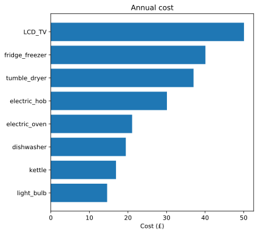
Some of the appliances above are essential and must always be on, such as the fridge freezer. To bring down electricity usage of other devices in the home, we need to run them more efficiently.
Lighten your electric load
Why not replace old incandescent light bulbs with LEDs? The energy savings will quickly offset the initial cost of replacing standard 100W bulbs.
Not only are LEDs more energy efficient, but they also come in a range of shades including cool to warm. This means you can create the perfect room lighting ambience in addition to reducing energy usage.
Reducing washing machine usage
Don’t use your washing machine when the load is only half full. Instead, wait until you have close to a full load.
Over time this will cut down on the number of wash cycles carried out and help bring down electricity costs. This will also reduce the amount of laundry powder/softener used over time. The same goes for using a tumble drier – wait until you have a full load before switching it on.
Cutting down TV electricity costs
To help keep TV electricity costs low try switching it off when you’re not actively watching TV. For example, if you are cooking in the kitchen, turn off the TV in the other room.
If the TV is on in the background and you’re scrolling on your phone, switch it off.
Changing dishwasher settings
Try switching your dishwasher to the ‘eco’ setting, if available. It will consume less energy since it will wash dishes at a lower temperature.
Also, don’t overload the dishwasher. It can be tempting to put in as many dishes as possible, but this can lower the efficiency of the dishwasher to effectively clean all the dishes.
Moreover, scrape off any large food bits from your dishes prior to loading them into the dishwasher. This will mean a smaller chance of having to re-run the dishwashing cycle if there's dirt remaining.
What are ‘vampire devices’ and do they add to my energy bill?
26th March 2022
A vampire device is a device that consumes electricity even when on standby mode.
As the number of electronic devices in our homes have grown significantly over the years, this can potentially mean a considerable amount of power being drained. This can lead to higher energy bills.
But by how much higher, if at all?
Set-up boxes
For example, a cable TV set-up box from Sky or Virgin Media when left on standby can cost £23.10 in per year as reported by the BBC. This is not surprising as these boxes are quite active, recording your favourite programmes and installing software updates even while on ‘standby’ mode.
It might be worthwhile to switch off your set-up box when not in use, especially overnight. But be warned, your favourite programmes might not be fully downloaded and ready to watch if you fully switch off your set-up box
TV standby mode
The standby setting of most TVs manufactured in the last decade is quite efficient and doesn’t drain a lot of power. Specifically, a TV on standby accrues on average less than £2 a year.
To help keep TV electricity costs low try switching it off when you’re not actively watching TV. For example, if you are cooking in the kitchen, turn off the TV in the other room.
Also, when you’re browsing on your computer/phone, don’t leave the TV on in the background, switch it off or put it into standby mode.
Can chargers overcharge batteries?
There exists other potential ‘vampire devices’, such as chargers used for phones and laptops.
Some people believe that even if your laptop or phone is fully charged and plugged in, the chargers continue to drain a large amount of power. However, this is not true.
Most chargers out there have modern circuitry. They can sense when your phone/laptop is fully charged and prevent overcharging and at this point will use very little electricity.
Verdict on vampire devices
While so-called 'vampire devices' do exist, with the rise of modern circuit-boards, most if not all household devices do not consume much energy while on standby mode.
Instead, the cost of heating contributes the most to our energy bills, rather than ‘vampire devices’.
An easy recipe for saving energy in the kitchen
20th March 2022
With the cost of living increasing, managing energy usage is important to keep utility bills low.
For example, consider the following graph showing some of the most energy-guzzling appliances in the home:
From this graph, many of these are high-energy items are found in the kitchen. As the average kitchen contains many appliances that consume large amounts of energy, we should try and use them more efficiently.
Water-using appliances
This includes washing machines and dishwashers. These devices use a considerable amount of energy to heat up water. So, try and select the Eco modes that use a lower temperature where possible. Reserve the higher temperature settings when washing heavily-soiled clothing.
Many detergents out there work just as well at lower temperatures for washing clothes. Also don’t use your washing machine when the load is only half full. Instead, wait until you have close to a full load.
Over time this will cut down on the number of wash cycles carried out and help bring down electricity costs. This will also reduce laundry detergents expenses over time. The same goes for using a tumble dryer – wait until you have a full load before switching it on.
The fridge freezer
A fridge-freezer is an essential component to your kitchen. While it needs to stay on all the time to provide a safe temperature for your food, follow these steps to make sure it remains efficient.
Try not overload your fridge with more food that it is designed for. If the refrigerator is completely full up, the harder it will have to work and the more power it will draw to maintain a constant temperature.
Also, wait for any freshly cooked food to cool down completely before placing into the fridge-freezer. This is because placing hot food into the fridge-freezer makes food items close by get warm too. The refrigerator will then have to consume more energy to bring down the internal fridge temperature to a safer level
Make sure the back of the fridge is kept clean and free of dust. This will help stop thick dust from accumulating on the condenser coils found at the back of the fridge. Dust-free coils will mean improved heat transfer and can help improve the energy efficiency of the appliance.
The microwave
Microwaves are more efficient at heating food compared to using an oven as they don’t heat the air inside.
Try and combine the use of a microwave with your cooking if you can. For example, when cooking a jacket potato, pre-cook it in a microwave first and then place it in the oven.
This will help keep oven energy usage low as the oven is used for a shorter period of time. Another benefit is that the jacket potato will be ready to eat quicker and taste better!
Cooking on the hob
When cooking on the hob, ensure you choose the right sized pan. Choosing a pan that is larger than required will mean using more heat energy than necessary.
Moreover, put a lid on the pan to help water boil quicker. Once boiling, don’t forget to lower the heat on the hob and bring it to a simmer. A simmer requires a less heat energy compared to a rolling boil.
The 50-30-20 Budget rule – a useful budgeting tool
15th March 2022
What is the 50-30-20 budget rule?
The 50-30-20 rule is a simple yet effective approach to budgeting. It can help you keep your spending in check by making you allocate your monthly income into three spending categories.
These categories and the percentage allocation to aim for is: 1. needs (50%), 2. wants (30%) and savings or clearing debt (20%). Let’s go through each of these spending categories in turn. This can be visualised as a pie chart:
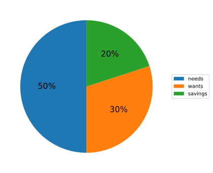
50% of your income on needs
Needs are essential living expenses – things you can’t live without. This can include: rent/mortgage payments, utility billls, groceries, work travel costs (i.e. train season tickets)
30% of your income on wants
Wants are non-essential living expenses – things you could live without if you had to. This can include: eating out, holidays, gym membership, video and music subscriptions.
If you are unsure if something is a need or want, ask yourself “Could I live without this?” If yes, it’s likely a want.
20% of your income on savings or debt
This can include: paying off any outstanding debts, saving money for a rainy day, pension contributions.
Just so you’re aware, minimum repayments towards clearing debt is categorised as needs. But payments above the minimum repayment amount should be allocated to the savings category. This is because these extra repayments reduce existing debt and accrued interest.
How to use the rule
Step 1
Look over your bank statements and receipts and categorise transactions from the last month. Each transaction should be categorised as either ‘needs’, ‘wants’ or ‘savings’.
Step 2
Calculate your take-home monthly income. If your income changes month to month, use the average over the last three months.
Step 3
Then work out the percentage you are spending in each category.
For example, if your monthly income is £1600 and the ‘needs’ category adds up to £850, then the calculation is: £850 ÷ £1600 = 0.53. Then multiply this by 100 to get the percentage value. Continuing with the example above, this is 0.53 × 100 = 53%.
Repeat the above calculation for the other two categories, ‘wants’ and ‘savings’.
Looking at your calculations, is there a category that is significantly over the 50-30-20 allocation? For example, if you discover you are spending over 50% of your monthly income on ‘wants’, this might be an area to make some spending adjustments to.
Small changes add up over time, such as putting more of your income into savings and reducing your spending on the ‘wants’ category. This can help you build healthy spending habits.
Should my spending fit the 50-30-20 rule exactly?
Everyone’s financial situation is different, so it’s okay not to match the 50-30-20 rule perfectly.
In fact, one key aim of using this rule is that it helps you become more aware about your monthly outgoings. It makes it easier to identify areas that you’re needlessly overspending on and helps you start budgeting better.
Relaxing of restrictions for travelling abroad
25th June 2021
This is not yet the meaningful restart the aviation industry needs to be able to recover from the pandemic. Karen Dee, Airport Operators Association
With the summer holiday season approaching, airlines are becoming understandably nervous about the UK’s traffic light system. The impact of this system on the number of customers travelling abroad during the busiest period of the year can be significant for the finances of these companies.
Given that many British people tend to holiday in Europe, currently most of the continent is on the orange list and so all returning travellers from these countries must quarantine at home for ten days. If not followed, travellers can face a hefty fine and so many avoid travelling abroad. As a result, this can quickly lead to empty seats on airplanes. A lot of empty seats.
And so, moving up more countries to the UK’s green list would be a dream come true for the aviation industry. However, while the government is under pressure to do exactly this, another perspective must be looked at altogether.
Many in Europe are not so keen to open their borders to non-essential travel from the UK. The reason being the more transmissible Delta variant has cemented its position as the UK’s dominant Covid strain. For example, if the UK classified Germany as a green category country tomorrow, Germany would be hard-pressed to do the same otherwise risk a surge in the Delta variant.
Encouragingly, there are on-going discussions in Downing Street of allowing fully vaccinated people face less restrictions when travelling abroad and removing quarantining on their return. This could be a life-line for the aviation industry across Europe in getting people sat in their airplanes and rebooting global tourism.
But the delicate question is whether it is fair that every adult should have the opportunity to be fully vaccinated before this proposal gets the green light and departs from the runway.
Surge in vaccination and the rise in delta variant cases
20th June 2021
One can never predict the future with perfect confidence. Michael Gove, Cabinet Office Minister
Recently, the UK government announced all those aged 18+ can book their covid vaccination jab from the NHS. This is good news considering the rapid spread of the Delta variant across the UK, and in particular the younger adult population.
Encouragingly, it has been reported that while two doses provide better protection against Covid-19, one dose significantly reduces the risk of severe disease and hospitalisation. The more jabs in arms, the smaller the risk of hospitals being over-run and thus the more likely social restrictions can be relaxed.
The date for the further unlocking of society in the UK is the 19th of July, the so-called ‘Freedom Day’ and it looks promising that there will not be another delay. The key reason being that whilst cases are rising, hospitalisation and subsequent deaths from Covid-19 are not rising as fast as the first or second wave. This is positive news considering how much more transmissible the Delta variant is compared to the Alpha variant.
Another matter that ministers in Westminster will be contemplating is whether school children should be next to be vaccinated or if these doses should instead be diverted to countries urgently in need to fully vaccinate their front line healthcare workers and elderly population.
But right now it is a race against time to get the younger adult population vaccinated with one and then two doses.
Data analysis and visualisation with Python
10th June 2021
Data will talk to you if you’re willing to listen. Jim Bergeson
My first real-world use of Python was performing data analysis and visualisation of my monthly spending during the first year of my PhD. In particular, I used Pandas – a tool I find personally to be more powerful than Excel!
I started by exporting twelve months of financial data available from my bank and adding sub-tags to each transaction before importing the modified data into Pandas. By using Python and Pandas together, I created a function with a few lines of code which could manipulate the data in a specific way.
This function could search for a pre-defined sub-tag through the many hundreds of transactions and sum up the total per month to produce a simpler table of data. For example, it could instantly tabulate the monthly spend at Sainsburys (a supermarket in the UK) from a years’ worth of financial transactions. With this table in hand, I was then able to visualise this data as a bar chart by using another Python tool called Matplotlib.
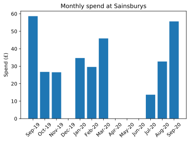
Inquisitive about exploiting Matplotlib further, I was then able to generate a stacked bar chart of the spend of all supermarkets I visited per month. This provided me with a more in-depth visualisation of my monthly grocery spend.
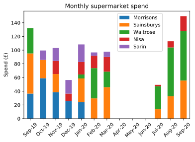
The use of data analysis tools in this side project illustrated how data science can make complex real-life data easier to understand. Visualising cleaned data from the unoptimized raw data helped me become more aware of my spending habits. It also gave me an insight into how I can manage my monthly outgoings more efficiently going forward.
My first venture into Python and data analysis was now complete!
The evolution of High-Throughput Experimentation in the pharmaceutical industry
Reviewed on 6th April 2021
The past decade has also witnessed the extension of HTE principles toward the realm of small-molecule process chemistry. Steven M. Mennen and co-workers
With the demands of pharmaceutical companies for novel reaction discovery and efficient routes to active bioactive molecules, High-Throughput Experimentation (HTE) is becoming an increasingly useful tool to meet these demands. In HTE, many reactions are performed in parallel resulting in an array of data in a short space of time.
This article provides an insight into the most common reaction types screened by the major pharmaceutical companies using HTE as well as several case-studies showcasing the success of this method in industry.
Intriguingly, biocatalysis is the most common reaction type screened with transformations including transaminases and hydrolases. Considering chemical transformations, metal-catalysed coupling reactions are prevalent. Suzuki-Miyaura reactions are at the top of the board followed by Buchwald-Hartwig aminations.
Also, there is a significant difference in the uptake of Pd-catalysed or Cu-catalysed coupling reactions within HTE programmes at different companies. Presumably, cost, ease of metal removal and environmental concerns are some of the factors involved in favouring one transition metal over another.
Staying on the theme of transition metal catalysed reactions, the article highlights the absence of Pd-catalysed C–H activation reactions in HTE – currently a hot-topic in academia. However, it is suggested that in the next 3-5 years, this will be one of the most frequently employed transformations in HTE.
In summary, HTE in the pharmaceutical industry continues to be a worthwhile investment with the benefits continuing to grow. Improvements to the speed of data generation and rapid interpretation of results has made this an important tool in the pharmaceutical tool-box.
Org. Process Res. Dev. 2019, 23 (6), pg. 1213–1242. DOI link: 10.1021/acs.oprd.9b00140
Catalytic C(sp3 )–H bond activation in tertiary alkylamines
Reviewed on 26th March 2021
The reaction can use both simple and complex starting materials to produce a range of multifaceted γ-aryl tertiary alkylamines and can be rendered enantioselective. Matthew J. Gaunt and co-workers
Utilising a tertiary alkylamine motif to couple an arene substrate via a metal-catalysed δ-C(sp3)-H activation protocol has been an unresolved problem until now.
For many existing metal-catalysed functionalisation reactions, a tailored functional group is required to position the metal at the correct location of a specific C–H bond. However, the use of these functional groups, termed Directing Groups (DGs) require overall longer synthetic routes due to installing and removing them from the molecule of interest. Many existing DGs also require harsh conditions to remove.
In this article, the above drawbacks of using traditional DGs is avoided by the use of a native functional group, a tertiary amine already present in the molecule.
However, using an alkylamine could lead to unwanted β-hydride elimination to occur on the alkyl backbone. Gaunt and co-workers avoided this deleterious pathway by employing a mono-protected amino acid. It was rationalised that this ligand favoured the C–H activation pathway by distorting the co-planar geometry necessary for β-hydride elimination.
Considering the substrate scope, a range of (hetero)aryl boronic acids could be used as the coupling partner. The scope of the amine component was also very broad with several tertiary amines tolerated including both acyclic and cyclic scaffolds. An example of this transformation is shown below.
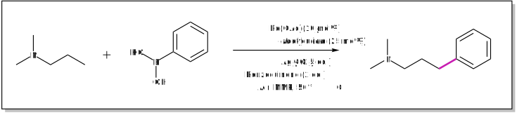
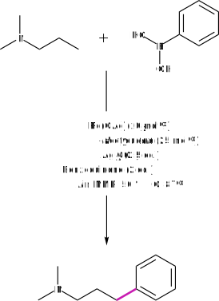
Moreover, this protocol was successfully applied to the late-stage functionalisation of bioactive compounds. Impressively, an enantioselective transformation was also developed with up to 90% e.e.
In summary, a C–H arylation protocol using tertiary alkylamines has been developed. This method has the potential for modifiying tertiary alkylamine containing pharmaceutical compounds, of which there exists plenty. As a result, novel bioactive chemical space can be explored with little chemical effort.
Nat. Chem. 2020, 12, pg. 76–81. DOI link: 10.1038/s41557-019-0393-8
Imine as a linchpin approach for meta-C–H functionalisation
Reviewed on 20th March 2021
Despite the widespread applications of C–H functionalisation, controlling site selectivity remains a significant challenge. Debabrata Maiti and co-workers
The use of covalently attached DGs for selective C–H functionalisation has been extensively explored but there exist limitations to this methodology including the need of longer synthetic routes. However, a non-covalent temporary DG (TDG) could deliver the same site selectivity in less synthetic steps.
Maiti and co-workers have pioneered a novel TDG that achieves this. The TDG binds to the substrate reversibly and coordinates to a metal centre, bringing the metal near to the desired C–H bond. While several DG motifs were examined including nitriles and quinolines, it was found that pyrimidine-based templates were the most promising. An example of this transformation is shown below.
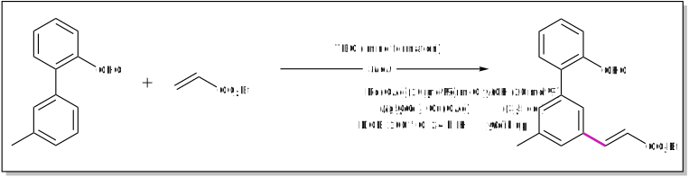
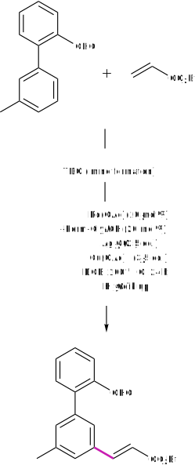
When performing reaction optimisation, the article comments that the commonly used solvent for C–H activation, HFIP had to be discarded as it can lead to imine decomposition. However, the solvent DCE could be substituted for HFIP while retaining good yields. From a health perspective, DCE should best be avoided due to its acute toxicity.
Analysing the scope of this olefination protocol, a diverse range of coupling partners was possible including short-chain and long-chain olefins. Natural products appended with acrylates including testosterone derivatives were well-tolerated signifying the potential use of this procedure in a pharmaceutical setting. For the corresponding aromatic substrate, electron neutral, electron-donating and electron-withdrawing aryl systems could all be olefinated at the meta position with good regioselectivity.
In summary, a temporary DG was developed that can achieve meta-C–H olefination without the need to install or remove a DG in two separate steps. This protocol has the potential for pyrimidine-based TDGs to be used for other C–H functionalisations such as allylation and alkynylation transformations.
Nat. Commun. 2021, 12, 1391. DOI link: 10.1038/s41467-021-21633-2